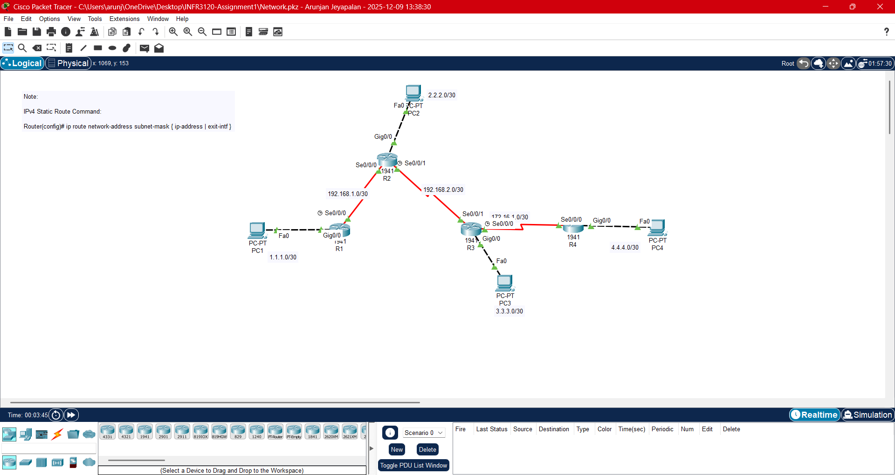

Cisco Packet Tracer Network Configuration
In this project, I was tasked with configuring a network using packet tracer. During this project I worked with routers, switches, and pcs in order to address ips, route and test connectivity.
These are a few projects I have worked on since attending Ontario Tech university.

In this project, I was tasked with configuring a network using packet tracer. During this project I worked with routers, switches, and pcs in order to address ips, route and test connectivity.
Worked with peers to analyze different leadership roles through various scenarios. Learnt to efficently develop solutions through communicating, effectivly collaborating, and using problem solving skills
In this project I designed and configured a network for a corperation connecting three buildings. I used packet tracer and to apply ipv4 subnetting and static routing. After configuring I tested the connectivity through a series of pings.
This project consists of a physics collision lab where I analysed the conservation of momentum and kinetic during an elastic collision. I used a simulation of a collision to analyze the momentum vectors and calulate the kietic energy. I then compared and investigated the results.